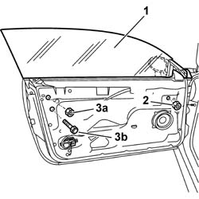
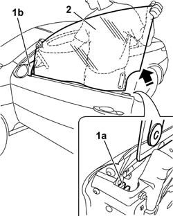
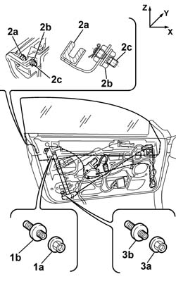
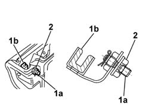
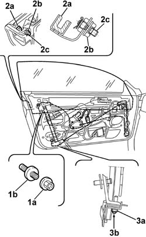
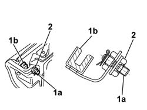
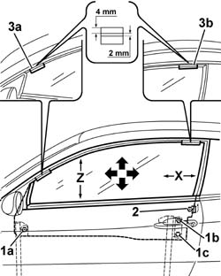
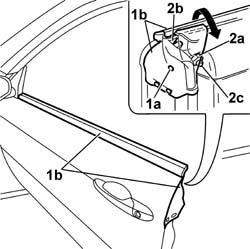
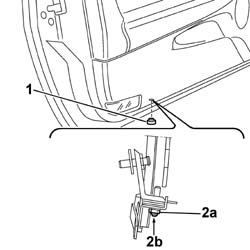

7005D14 FRONT SIDE DOOR DESCENDING WINDOW GLASS - R R WITH DOOR PANEL (AND MOUNT FRAME) REMOVED
- Path
- Procedures > 70 FITTINGS > 7005 PASSENGER COMPARTMENT FRONT SIDE DOORS > 7005D FRONT SIDE DOOR WINDOW GLASSES > 7005D14 FRONT SIDE DOOR DESCENDING WINDOW GLASS - R R WITH DOOR PANEL (AND MOUNT FRAME) REMOVED
- Kind
- repair procedure (removal / refitting; the operation number is the code)
- Applies to
- all engines; all production periods
- Interactive page
- https://sloeber94.github.io/elrnDB-aGt/en/#/125001780
Applies to: all engines; all production periods
 Removing
Removing
 Refitting
RefittingOp. 7005D26 FRONT SIDE DESCENDING WINDOW GLASS SCRAPER (OUTER) R R
1. Completely raise the window glass.
2. Undo the nut fixing the window glass to the front guide, working via the special opening in the door frame.
3. Undo the nut (3a) and the bolt (3b) fixing the window glass to the rear guide, working via the special openings in the door frame.

Applies to: all engines; all production periods
1. Raise the window glass releasing it firstly from the upper rear guide plate (1a) and then releasing it from the front triangular seal (1b).
2. Withdraw the window glass from the door frame.

Applies to: all engines; all production periods
Refitting
RemovingCheck the condition of the window glass and the fastening elements.
Position the window glass in the door frame fitting the front section first in the triangular seal and then inserting the rear section in the upper rear guide plate.
Slide the window glass downwards to insert the fastening pins in the window opening guides.
Push the window glass into the fully forward, fully lowered position, then proceed with tightening the window fastenings in the following order: front nut, upper rer nu and lower rear nut.
Place the upper rear guide plate in contact with the window glass and screw in the fixing nut without tightening it.
Window adjustment on transverse axis (Y)
Then carry out the transverse adjustement (Y) of the window following the instructions given below.
Disconnecct the leads from the battery terminals.
1. Open the door and unto the nut (1a) on the upper rear guide; tighten the adjustment pin (1b) in a clockwise direction until it is in the end of travel position so that the clearance between the washer and the door frame is maximum.
2. Releaase the upper adjustment plate (2a), loosening the nut (2b); place the adjustment screw (2c) in the end of travel position, rotating it in a clockwise direction.
Fit the outside glass scraper seal.
With the door closed, check the distance (on the Y axis) between the fixed rear window and the door window at the top rear corner.
It should be possible to align the door window with the fixed windoe (0 mm) or the maximum projection should be 2 mm (+2Y) in relation to the fixed window.
If the distance (on the Y axis) between the fixed window and the door window is not within the above figures, continue as described below.
3. Open the door and, with the nut (3a) slack, tighten or loosen the lower rear adjustment pin (3b): if the pin is tightened (clockwise direction) the upper rear part of the window moves away from the fixed window; if the pin is loosened (anti-clockwise direction), the top rear section of the window moves closer to the fixed window.
Close the door and measure the distance (on the Y axis) between the door window and the fixed window again; if the measurement is not within the recommended figures, repeat the adjustment.

Applies to: all engines; all production periods
With the door closed, check the parallelism (on the Y axis) between the door window and the fixed rear window.
If the parallelism measurement (on the Y axis) between the door window and the fixed window does not correspond to the recommended figures, proceed as described below.
1. Open the door and tighten or loosen the adjustment pin (1a) for the rear plate (1b) in order to place the parallelism value between the door window and the fixed rear window within the tolerance (0.5Y): if the pin is tightened (clockwise direction) the lower rear section of the door window moves closer to the fixed rear window; if the pin is loosened (anti-clockwise direction) the lower rear section of the door window moves away from the fixed rear window.
2. Once the Y adjustment of the parallelism between the windows has been made, screw in the upper rear plate nut (without tightening it).

Applies to: all engines; all production periods
Close the door and check the parallelism (on the Y axis) between the door window and the fixed rear window; if the measurement does not correspond to the recommended values, repeat the adjustment procedure.
Once the adjustment is completed, loosen the adjustment pin on the upper rear guide (anti-clockwise direction) so that the washer comes into contact with the door frame.
Tighten the nut on the upper rear adjustment pin and proceed with tightening the nuts loosened for carrying out the adjustment to torque.
 | Fastening | Component | Ø | Value (daNm) |
|---|---|---|---|---|
- | Nut | FRONT ELECTRICALLY OPERATED WINDOW MECH | M8 | 16 |
If a further load on the Y axis is required following water penetration, proceed as described below.
1. Open the door and undo the nut (1a) on the upper rear guide; tighten the adjustment pin (1b) in a clockwise direction until it is in the end of travel position so that the clearance between the washer and the door frame is maximum.
2. Release the upper adjustment plate (2a) undoing the nut (2b); place the adjustment screw (2c) in the end of travel position rotating it in a clockwise direction.
Fit the outside glass scraper seal.
With the door closed, check the distance (on the Y axis) between the fixed rear window and the door window at the top rear corner.
It should be possible to align the door window with the fixed window (0 mm) or the maximum projection should be 2 mm (+2Y) in relation to the fixed window.
If the distance between the fixed window and the door window does not correspond to the above figures, proceed as described below.
3. Working via the opening in the door frame by the rear guide, release the nut (3a) on the adjustment cam, then tighten the pin (3b) in a clockwise direction until it is in the end of travel position.
Tighten the nut on the cam to the recommended torque.
| Fastening | Component | Ø | Value (daNm) |
|---|---|---|---|---|
- | Nut | FRONT ELECTRICALLY OPERATED WINDOW MECH | M8 | 16 |

Applies to: all engines; all production periods
With the door closed, proceed with checking the parallelism (on the Y axis) between the door window and the fixed rear window.
If the parallelism measurement (on the Y axis) between the door window and the fixed window is not within the recommended values, proceed as described below.
1. Open the door and tighten or loosen the adjustment pin (1a) for the rear plate (1b) in order to place the parallelism value between the door window and the fixed rear window within the tolerance (0.5Y): if the pin is tightened (clockwise direction) the lower rear section of the door window moves closer to the fixed rear window; if the pin is loosened (anti-clockwise direction) the lower rear section of the door window moves away from the fixed rear
2. Once the Y adjustment of the parallelism between the windows has been made, screw in the upper rear plate nut (without tightening it).

Applies to: all engines; all production periods
Close the door and check the parallelism (on the Y axis) between the door window and the fixed rear window; if the measurement does not correspond to the recommended values, repeat the adjustment procedure.
Once the adjustment is completed, loosen the adjustment pin on the upper rear guide (anti-clockwise direction) so that the washer comes into contact with the door frame.
Tighten the nut on the upper rear adjustment pin an continue tightening the nuts loosened for carrying out the adjustment to torque.
| Fastening | Component | Ø | Value (daNm) |
|---|---|---|---|---|
- | Nut | FRONT ELECTRICALLY OPERATED WINDOW MECH | M8 | 16 |
Window adjustment on longitudinal axis (X) and height (Z)
This adjustment should be carried out by two mechanics, one inside the vehicle who should work on the window fastenings and the other outside the vehicle who should move the window using the special suction pads.
Close the door.
Fit the special suction pads for moving the window on the outside of the glass.
1. Undo the front nut (1a), the rear nut (1b) and the rear bolt (1c) fixing the window to the guides.
2. Undo the nut fixing the upper rear plate without altering the position of the actual plate.
3. There are two strips of red tape with a green line in the middle on the new window which should be used as a reference for adjustment Z (3a) and (3b). If the same window is being refitted, fit the two pieces of tape in the position illustrated, making a line 2 mm thick 4 mm from the top edge. Move the window using the suction pads and carry out the Z adjustment moving the window until the red section of the tapes (3a) and (3b) is fully inserted in the upper door surround seal (only the green stripe corresponding to the 2 mm line if the window is being reused should remain visible). Move the window using the suction pads and carry out the X adjustment moving the window until it is 5 mm -0+1 from the fixed rear glass.

Applies to: all engines; all production periods
Proceed with tightening the window fastenings, in the following order: front nut, upper rear nut, lower rear bolt.
| Fastening | Component | Ø | Value (daNm) |
|---|---|---|---|---|
- | Nut | FRONT DOOR WINDOW GLASS | M6 | (Front 07 |
| Fastening | Component | Ø | Value (daNm) |
|---|---|---|---|---|
- | Nut | FRONT DOOR WINDOW GLASS | M6 | (Rear 07 |
| Fastening | Component | Ø | Value (daNm) |
|---|---|---|---|---|
- | Bolt | FRONT DOOR WINDOW GLASS | M6 | (Rear 07 |
Remove the suction pads.
Place the upper rear plate in contact with the window and tighten the fixing nut to the recommended torque.
| Fastening | Component | Ø | Value (daNm) |
|---|---|---|---|---|
- | Nut | FRONT DOOR GLASS GUIDE CHANNEL | M8 | 16 |
Op. 7005D26 FRONT SIDE DESCENDING WINDOW GLASS SCRAPER (OUTER) R R
Programme the electric windows control unit end of travel proceeding as described
Op. 7005M40 FRONT ELECTRIC WINDOW SYSTEM ECU - R+R FOLLOWING ELECTRICAL WIRING CHECK.
Check that the window works properly.
Transverse window adjustment (Y) with door panel fitted
If the window requires a further Y load following water penetration, proceed as described below without removing the door panel.
1. With the door open, remove the upper retaining button (1a) on the side of the door for the glass scraper seal, then extract the glass scraper (1b) and rotate it towards the inside of the vehicle in order to be able to gain access to the nut underneath fixing the upper window plate.
2. Undo the nut (2a) fixing the upper window plate (2b) and place the adjustment screw (2c) in the end of travel position rotating it in a clockwise direction.

Applies to: all engines; all production periods
1. Remove the protective plug located in the lower section of the door by the rear window opening guide.
2. Working via the special opening in the door frame, undo the nut (2a) on the rear window opening guide adjustment cam, then tighten the pin (2b) (rotating it in a clockwise direction) until it is in the end of travel position.
Tighten the nut on the adjustment cam to the recommended torque.
| Fastening | Component | Ø | Value (daNm) |
|---|---|---|---|---|
- | Nut | FRONT ELECTRICALLY OPERATED WINDOW MECH | M8 | 16 |

Applies to: all engines; all production periods
With the door closed, proceed with checking the parallelism (on the Y axis) betwen the door window and the fixed rear window.
If the parallelism measurement between the door window and the fixed window does not correspond to the recommended figures, proceed as described below.
Open the door and tighten or loosen the rear plate adjustment pin so that the parallelism figure between the door window and the fixed rear window is within the tolerance (0.5Y): if the pin is tightened (clockwise direction), the lower rear section of the door moves closer to the fixed rear window; if the pin is loosened (anti-clockwise direction) the lower rear section of the door window moves away from the fixed rear window.
Once the Y adjustment of the parallelism between the windows has been carried out screw in the upper rear plate nut (without tightening it).
Close the door and check the parallelism (on the Y axis) between the door window and the fixed rear window; if the measurement does not correspond to the recommended values, repeat the adjustment procedure.
If the measurement corresponds to the recommended value, tighten the upper rear plate nut to the recommended torque.
| Fastening | Component | Ø | Value (daNm) |
|---|---|---|---|---|
- | Nut | FRONT DOOR GLASS GUIDE CHANNEL | M8 | 16 |
Reposition the plug under the door.
Reposition the glass scraper seal.
Topics linked from this page (2)
- 7005D26 FRONT SIDE DESCENDING WINDOW GLASS SCRAPER (OUTER) R R
- 7005M40 FRONT ELECTRIC WINDOW SYSTEM ECU - R+R FOLLOWING ELECTRICAL WIRING CHECK
Topics that link to this page (13)
- 7005A14 FRONT SIDE DOOR - ADJUST CENTERING AND MOULDING - INCLUDES ADAPTATION OF HINGES AND SEALS ON DOOR COMPARTMENT
- 7005C10 FRONT DOOR OUTER HANDLE - R R WITH DOOR PANEL REMOVED
- 7005C11 FRONT SIDE DOOR OUTSIDE HANDLE R R
- 7005C42 FRONT SIDE DOOR BARREL/LOCK CONNECTING LINKAGE - R R WITH DOOR PANEL REMOVED
- 7005C43 LINK CONNECTING FRONT SIDE DOOR BARRELS/CATCH - R+R
- 7005D15 FRONT SIDE DOOR DESCENDING WINDOW GLASS R R
- 7005D24 FRONT DOOR WINDOW REAR GUIDE - R R
- 7005D25 FRONT DOOR WINDOW REAR GUIDE - R R
- 7005M20 FRONT SIDE DOOR ELECTRIC WINDOW SYSTEM - R R WITH DOOR PANEL/SUPPORT FRAME REMOVED
- 7005M21 FRONT SIDE DOOR ELECTRICALLY OPERATED WINDOW - R R
- 7005N20 FRONT SIDE DOOR LOCK MOTOR/CATCH ASSEMBLY - RR WITH DOOR PANEL AND SUPPORT FRAME REMOVED
- 7005N21 FRONT SIDE DOOR LOCK MOTOR-LOCK ASSEMBLEY-R R
- 7205E36 STRIPPING FRONT SIDE DOOR